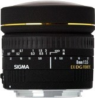
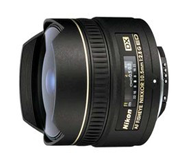

鱼眼镜头
360全景拍摄硬件配备-鱼眼镜头
鱼眼镜头是一种焦距极短并且视角接近或等于180°的镜头。16mm或焦距更短的镜头.它是一种极端的广角镜头，“鱼眼镜头”是它的俗称。为使镜头达到免费的摄影视角，这种摄影镜头的前镜片直径且呈抛物状向镜头前部凸出，与鱼的眼睛颇为相似，“鱼眼镜头”因此而得名。鱼眼镜头属于超广角镜头中的一种特殊镜头，它的视角力求达到或超出人眼所能看到的范围。因此，鱼眼镜头与人们眼中的真实世界的景象存在很大的差别，因为我们在实际生活中看见的景物是有规则的固定形态，而通过鱼眼镜头产生的画面效果则超出了这一范畴。【鱼眼镜头在全景拍摄中的地位】
鱼眼镜头是一种超广角镜头，一般的定义是视角达到180度的镜头就称之为鱼眼镜头。在135画幅的相机上，16mm的镜头就可以达到180度的视角，所以我们长久以来把焦距16mm以下的镜头都称为鱼眼镜头。鱼眼镜头免费的作用是视角范围大，这为近距离拍摄大范围景物创造了条件；且鱼眼镜头具有相当长的景深，有利于表现照片的长景深效果。一个360度的全景图用鱼眼镜头来拍摄制作，只需要拍摄几张就可以了，加上使用了数百万像素的单反数码相机，我们可以轻易的将图像导入全景拼合软件，能很方便的生成一张360度的高清晰全景。
【微企推荐的鱼眼镜头】
|  |
适马8MM鱼眼镜头在35mm全幅面数码DSLR和传统SLR相机上，涵括180°视角能产生出超现实影像的圆型画面.适合的接环有: 适马、佳能、尼康索尼、宾得 |
 | 该镜头是尼康的首只鱼眼镜头，专用于数码单镜反光相机，这也是首次全画面覆盖 180°范围。10.5毫米焦距的超广角镜头令数码相机的画角范围相当于一部35毫米135 格式的相机连接上16毫米鱼眼镜头所拍摄的角度。该镜头主要用于尼康 DX 格式数码单镜反光相机，令用家能捕捉独特的影像效果。 |
【等效焦距】
数码相机镜头的焦距总是以135胶片相机的镜头作为参照物的，数码相机由于其感光面（CCD或CMOS）的尺寸是随相机不同而不同（135相机的感光面是固定不变的）。如果以相机镜头的真实焦距是难以比较不同相机的拍摄范围的，所以都换算到等价的135相机的镜头焦距，然后才进行比较，换算得到的焦距就是等效焦距。135胶片相机都是使用上图中所示的35mm胶片，而数码相机的CCD/CMOS尺寸往往都相对较小。配合同样的镜头，数码相机的视角要比135相机小，视角的减小可以等同于焦距的增长(视角和焦距成反比)。
有这样一个简单的方法计算数码相机的变焦系数。例如Nikon D40的CCD尺寸为23.7 x 15.6 mm（这个尺寸可以从相机参数中获得），我们用35mm胶片的成像面的宽36mm除以Nikon D40的CCD的宽23.7mm，得到的值就是变焦系数1.5。当我们把8mm的鱼眼镜头加在Nikon D40上时，这个鱼眼镜头的等效焦距就是8*1.5=12mm。Nikon 数码单反相机的变焦系数大多在1.5，而Canon的EOS系列大多为1.6。在Nikon或者Canon的数码相机上，这两款镜头的等效焦距大约为16mm和12mm。不同的焦距拍摄得到的图像也是截然不同的。